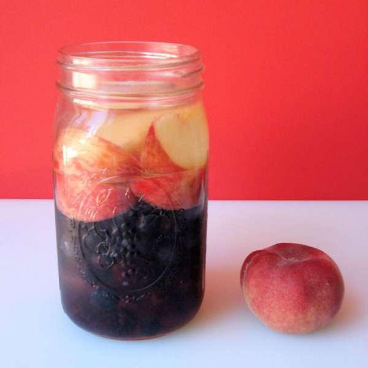
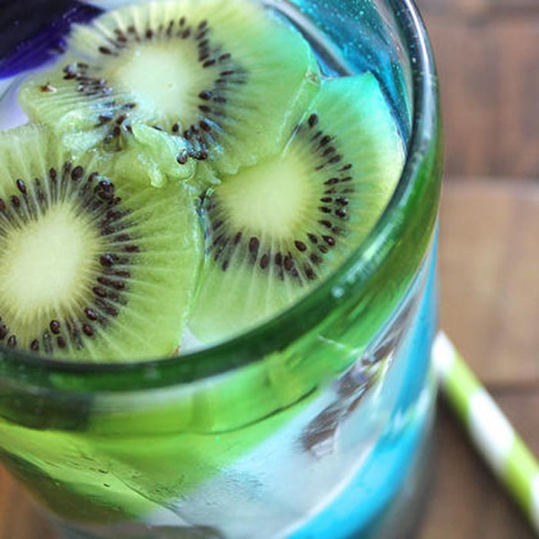
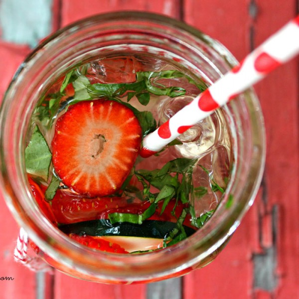
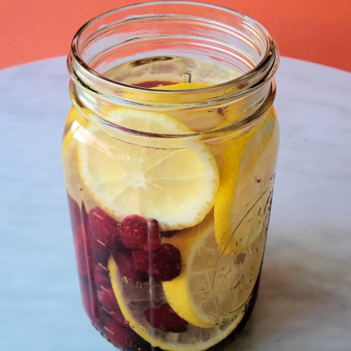
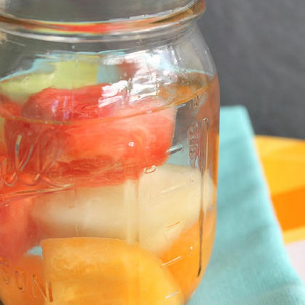
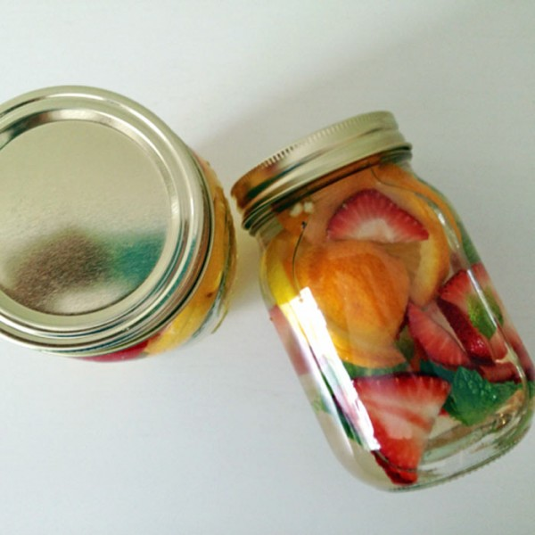
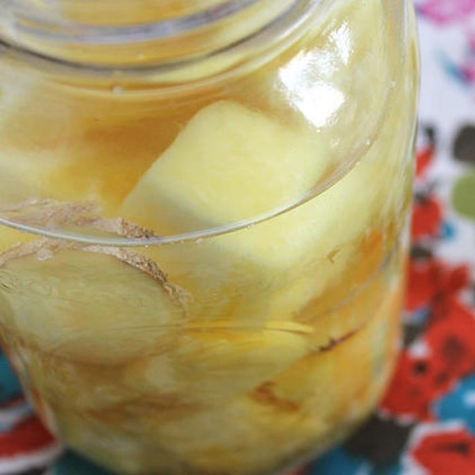
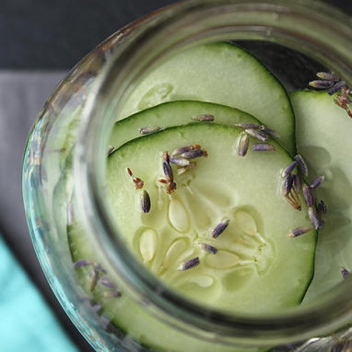

INFUSED WATER
Berry, Peach & Coconut

- Ingredients:
- 1 cup organic blueberries
- 1 cup organic blackberries
- 2 doughnut peaches, pitted and cut into half-inch wedges
- 6 cups spring or filtered water
- 2 cups unsweetened organic coconut water
- 1 gallon clean glass jar with lid
- Directions:
- Place blueberries and blackberries into the bottom of your jar, then the peach slices on top.
- Pour the spring water and coconut water into the jar. Stir the water, cover with a lid and put water into the refrigerator for at least one hour or overnight for the best flavor. Drink within two days.
Kiwi Cocktail

- Ingredients:
- 3-4 ripe kiwis, peeled and thinly sliced (or crushed for more flavor)
- 2 quarts filtered or spring water
- Directions:
- Add the sliced kiwis to a 64-ounce Mason jar or pitcher.
- Add the filtered water.
- Refrigerate until cold and enjoy.
Strawberry, Basil & Cucumber

- Ingredients:
- 3 basil leaves roughly chopped
- 1 strawberry sliced
- 3-5 slices of cucumber
- Ice
- Water
- Directions:
- Combine all the ingredients in a large glass, and let sit for at least 5 minutes before enjoying.
Raspberry & Lemon

- Ingredients:
- 2 cups organic raspberries
- 8 cups spring or filtered water
- 1 large organic lemon, cut into half-inch slices
- 2 dried Medjool dates
- 1 gallon clean glass jar with lid
- Directions
- Place raspberries into the bottom of your jar. Add the dates, then layer the lemon slices on top. Pour water into jar and place lid on top.
- Place water into the refrigerator and let infuse for 1 hour.
Melon Melody

- Ingredients:
- 1 cup cantaloupe pieces
- 1 cup watermelon pieces
- 1 cup honeydew pieces
- 2 quarts filtered or spring water
- Directions:
- Add your melons to a 64-ounce Mason jar or pitcher.
- Pour the water over top and chill. Serve over ice.
Orange, Strawberry & Mint

- Ingredients:
- 1/4 cup fresh mint
- 1/2 cup strawberries, sliced
- 1/2 orange, sliced
- 16 ounces filtered water
- Directions
- Place all fruits and herbs into the mason jar.
- Fill to top with water.
- Seal mason jar tightly and let it sit overnight in the refrigerator.
Pineapple & Ginger

- Ingredients:
- 1 cup fresh pineapple pieces (crushed for more a sweeter taste)
- 1-inch piece ginger, thinly sliced
- 2 quarts filtered or spring water
- Directions:
- Add the pineapple and ginger to a 64-ounce Mason jar or pitcher.
- Pour the water over top and refrigerate until cold. Serve over ice.
Cucumber & Lavender

- Ingredients:
- 1 cucumber, thinly sliced
- 1 teaspoon dried culinary lavender, or 2 fresh lavender sprigs
- 2 quarts filtered or spring water
- Directions:
- Add the cucumbers and lavender to a 64-ounce Mason jar or pitcher.
- Add the filtered water. If using dried lavender, strain before serving.
- Refrigerate until cold and enjoy.